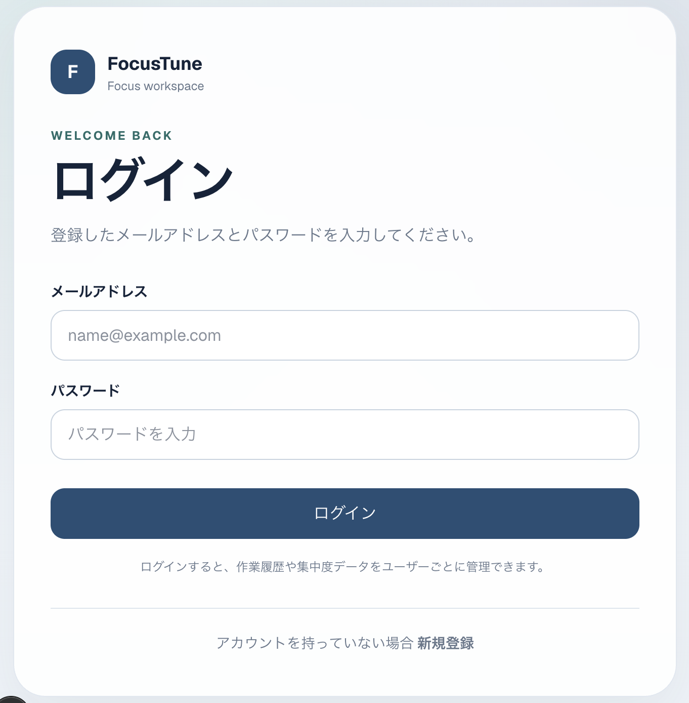
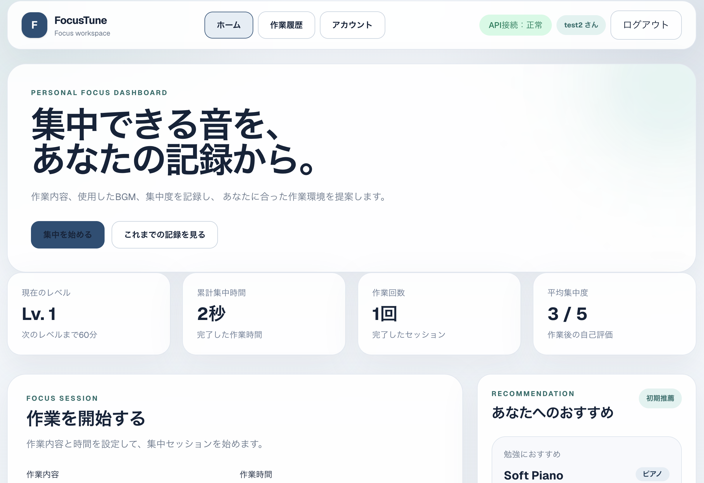

FocusTune
集中支援・作業用BGM推薦アプリ
概要
FocusTuneは、作業内容やユーザーの集中度評価をもとに、 一人ひとりに適した作業用BGMを推薦する 集中支援Webアプリケーションです。
大学で取り組んでいる「作業用BGMと集中」に関する研究を、 実際に利用できるサービスへ発展させることを目的として開発しています。
アプリ画面

ログイン
ユーザーごとの作業履歴や集中度データを 管理するためのログイン画面。

Focus Dashboard
集中時間・作業回数・平均集中度などを確認し、 新しい集中セッションを開始できます。
コンセプト
MUSIC × FOCUS × DATA
「集中できる音」を、
あなたの記録から。
作業内容、使用したBGM、作業後の集中度などを記録し、 蓄積されたデータからユーザーに適した作業環境を提案します。
主な機能
ACCOUNT
ユーザー登録・ログイン
TASK
作業内容・作業時間の登録
TIMER
ポモドーロタイマー
MUSIC
作業用BGMの再生
RATING
作業後の集中度評価
HISTORY
お気に入り・スキップ履歴
DASHBOARD
集中時間・評価の可視化
RECOMMEND
ユーザー別BGM推薦
技術構成
実装状況
今後の展望
十分な集中度評価・再生履歴・スキップ履歴が蓄積された段階で、 ユーザーごとのBGM推薦機能を実装する予定です。
また、利用時間や作業回数に応じたレベルアップや機能解放を導入し、 データを蓄積する過程そのものを楽しめる設計を目指しています。
最終的には、音響特徴量解析の研究成果も組み合わせ、 音楽の特徴とユーザーの集中度の関係を活用した 推薦システムへ発展させます。